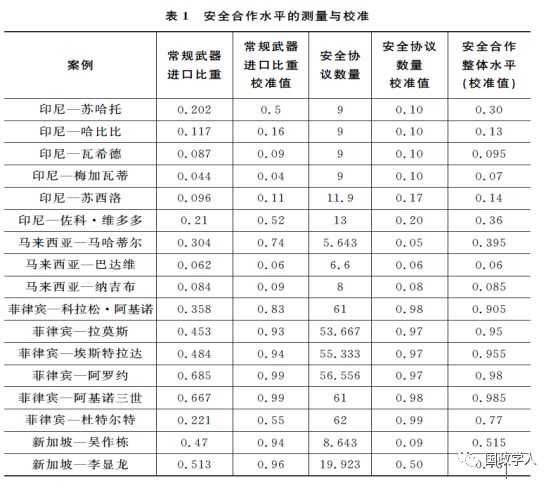
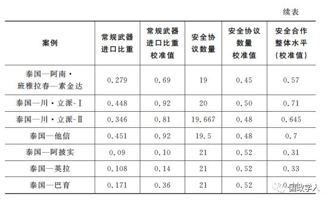
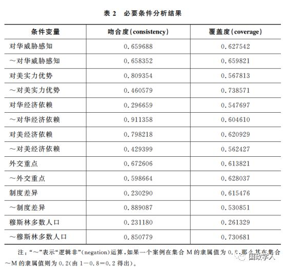
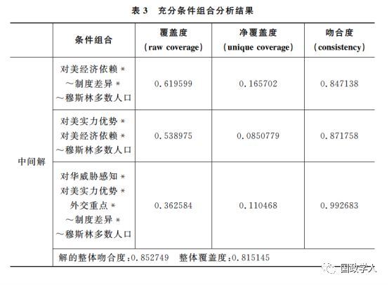
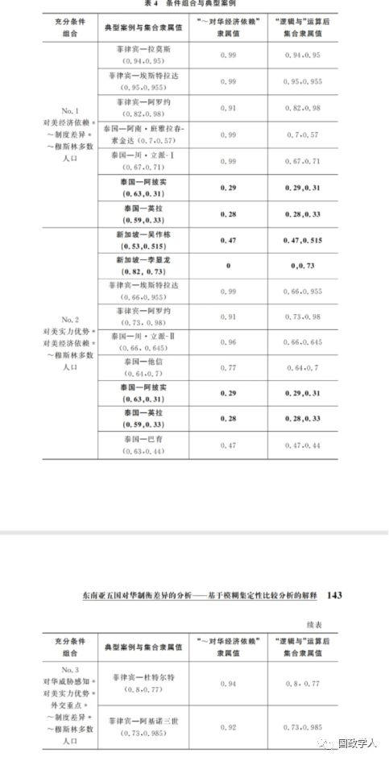

收录于合集

简 介
【作者】 查雯 ，外交学院国际关系研究所副教授，北京对外交流与外事管理研究基地研究员； 吕蕙伊 ，外交学院国际关系研究所硕士研究生。
**【 编辑】**袁浩延
【校对】 周雨橙、李玉婷、高嘉琳
【来源】 «国际政治科学»2019年第4卷第１期(总第13期)，第116—144页
内容提要
近年来，越来越多的国际关系学者开始采用“对冲”这一概念，以此概括中小国家应对崛起大国时作出的战略选择。本文试图弥补已有研究存在的两大缺憾：第一，对冲作为一个标签过于模糊、笼统，而不同国家的对冲战略又存在一定差异，这种差异是否需要在理论层面上给予解释? 第二，对冲被认为是一种混合战略，兼具追随与制衡的特点，但作为矛盾的两个方面，追随与制衡是否会相互影响并促进对冲战略本身的演变? 已有研究没有给出明确可靠的答案。为此，本文系统测量５个东南亚国家在1990年至2017年与美国的安全合作水平，并指出这些国家的对华制衡水平存在明显差异。在此基础上，本文通过模糊集定性比较分析方法，对这一差异进行了解释。分析结果显示，对中国有限的经济依赖构成了对美密切安全合作的必要条件。此外，穆斯林人口、中美实力对比、美国的经济影响力以及东南亚国家与美国国内制度的相似程度，也是决定安全合作水平的重要条件。
【 关键词 】 对冲 制衡 东南亚 模糊集定性比较分析

正文
**1
**
问题的提出
在面对崛起中的大国时，中小国家将作出怎样的战略选择? 主流国际关系理论长期围绕“制衡”(balancing)与“追随”(bandwagoning)这两个关键概念展开辩论。然而，有关东南亚国家对华政策的经验研究则指出，制衡与追随并不能准确描述这些国家的战略选择。一个普遍存在的现象是，东南亚乃至东亚的大多数国家均与中国开展密切的经济与外交合作，同时与美国保持了不同程度的安全合作。换言之，针对中国的追随与制衡行为是并存的。那么，如何概括并解释这种混合战略? 在过去十几年间，国际关系学者结合东南亚的现实，对“制衡”与“追随”的概念进行了修正，重新提炼出了一系列新的术语，如“软制衡”(soft balancing)、“低强度制衡”(low-intensity balancing)、“间接制衡”(indirect balancing)、“复合制衡”(complex balancing)和“适应”(accommodation)等。
繁多的概念丰富了对经验现象的理解和认识，但也在一定程度上阻碍了学术对话的有效进行。近年来，一些学者开始摒弃繁复的名词，采用“对冲”(hedging)这一概念来概括东南亚国家针对中国作出的战略选择。然而，“对冲”这一概念的广泛使用也带来了新的问题。具体而言，“对冲”越来越成为一个笼统的名词，被用来概括包括越南、马来西亚、新加坡、印度尼西亚、泰国等在内的诸多东南亚国家的对华政策。与此同时，这些国家(以及同一国家不同政府)的外交政策差异却在一定程度上被学者忽视。正如戴伦林(Darren J．Lim)与扎克·库珀(Zack Cooper)指出的:“从经验出发，东亚所有国家(除朝鲜外)都可以说成是在实施对冲。因变量变化的缺失进一步破坏了这一概念的分析价值。”
**东南亚国家的对华战略是否存在显著的差异 ？如果回答是肯定的，又该如何解释这样的差异? 本文将研究重点聚焦于５个东南亚国家，它们分别是印度尼西亚、马来西亚、菲律宾、新加坡、泰国。**根据已有文献，这５个国家均对华奉行对冲战略。 本文通过系统测量 1990年至2017年这５个东南亚国家与美国的安全合作水平，以此来衡量这些国家的对华制衡水平。 测量结果表明，这些国家的对华制衡水平存在明显差异。 这也进一步说明 “对冲”这一概念的笼统性、模糊性。在此基础上，本文通过模糊集定性比较分析方法，尝试对这些国家对华制衡水平的差异性作出系统解释。 分析发现，对中国有限的经济依赖，构成了东南亚国家与美国开展密切安全合作的必要条件。 这一研究发现在一定程度上回应了近年来有关中国经济外交成效的争论及质疑。 此外，受国内反美情绪的影响，东南亚的伊斯兰国家与美国的安全合作水平普遍较低。同时，中美实力对比、美国的经济影响力以及东南亚国家与美国国内制度的相似程度，也是决定安全合作水平的重要因素。
**2
**
对冲：发展与局限
“对冲”本是金融学概念，在过去几年间，其在国际关系领域的应用逐渐广泛，定义也逐渐清晰。 **“ 对冲”指的是国家通过同时采取相反的甚至相互矛盾的行动，以降低每一种行动可能带来的潜在风险。**麦艾文(Evan S．Medeiros)在论述中美两国针对彼此采取的对冲战略时，将“对冲”定义为“一方面强调接触与一体化机制，而另一方面则强调现实主义式的制衡，(制衡主要采取)与亚洲国家开展外部安全合作以及国家军事现代化的形式”。这一定义凸显了对冲作为一种混合战略的特性。
实际上，在东南亚的情境下，对冲也体现为一种混合战略。如果将制衡与追随视为中小国家外交战略选择中的两个极端，对冲则是二者之间的一条中间道路，兼具制衡与追随的特征。 例如，马来西亚学者郭清水(Kuik Cheng-Chwee)认为，对冲战略有两个构成部分:一个是“收益最大化”(returns maximizing)，指通过与崛起大国发展良好的关系，中小国家可以在短期内从大国手中获得更多的经济与外交利益；另一个则是“风险预防”(risk contingency)，指为崛起大国可能带来的长期安全风险做好准备。中国学者王栋也强调对冲所体现出的“策略集合”的属性，他认为对冲囊括了五种策略，分别为接触、束缚、防范、牵制和制衡，其中接触和束缚属合作性战略工具，防范、牵制和制衡则为强制性手段。 如果将“对冲”这一抽象的概念转化为可供观察的指标，实施对冲战略的具体行动则可能包括:第一，增强军事实力而不明确指明竞争对手；第二，积极参与基于自愿原则(而非规则)的双边与多边合作；第三，避免坚定的制衡或追随；第四，同时同等地改善与两个地区最强国家的关系等。
**那么，究竟什么是对冲战略产生的主要原因? **一些学者将其归因为战略环境的不确定性和复杂性。凡·杰克逊(Van Jackson)认为，３个因素可以解释对冲战略的产生:第一，中美权力转移过程中的不确定性。具体而言，中国是否将赶超美国? 一旦赶超发生，中国是否会改变地区秩序? 美国是否有维护其亚太主导地位的经济实力? 第二，多极体系下国家对彼此意图及联盟稳固性的不确定性。第三，亚洲国家关系网络中蕴含的敏感性(如历史问题)、变化性(如一些国家外交政策的突然调整)以及多个权力等级结构与议题等级结构可能存在的冲突与矛盾。
与复杂的外部环境并存的，是国内政治对东南亚国家外交战略选择带来的影响。 例如，有研究从增进政府绩效合法性(performance legitimacy)的角度出发，解释为什么马来西亚在加强与美国安全合作的同时，寻求与中国改善和升级双边关系。此外，作为东盟十国中仅有的两个和美国签署过安保条约的国家，泰国和菲律宾近年来在中美之间的游走，在很大程度上也受国内合法性建构的影响。 不仅如此，政治精英共识的缺乏、派系政治也可能导致对冲战略的产生和延续。
综上所述，已有文献已经对 “对冲”的定义及产生原因进行了较为清晰的阐述。然而，对冲研究仍面临着两个亟须解决的问题： 首先，对冲作为一个标签，往往被用来概括几乎所有东南亚国家的战略选择。而另一方面，不同东南亚国家 (或一些国家的不同政府)却采取了具有明显差异的大国外交政策。“对冲”概念的这一笼统性和模糊性也引起了不少学者的关注。林(Darren J．Lim)与库珀(Zack Cooper)就十分正确地指出:“‘对冲’变成了一个标签，而不是一个具有理论变化、可证伪的预测以及具体的概念化与测量的分析性概念。”
针对这一问题，不少学者主张重新定义“对冲”。林与库珀也主张从安全角度界定“对冲”，从而更加准确地辨别哪些国家真正奉行对冲战略。他们指出，可以从两个维度划分东亚国家的战略选择:第一，是否和中国有重大安全争端；第二，是否与美国签署安保条约。根据该理论，菲律宾和日本既与中国存在争端，又与美国签署安保条约，因而可以算作美国的“坚定盟友”。泰国、韩国、澳大利亚虽签有安保条约，但与中国之间不存在重大安全争端，所以是美国的“有保留的盟友”。越南和马来西亚则因同中国存在争端，且与美国没有签署安全条约而成为美国“未来的伙伴”。上述两个条件都不具备从而奉行对冲战略的国家，则仅有新加坡、缅甸、印尼与文莱。 与此类似，中国学者刘若楠也认为，应将对对冲的讨论集中在安全领域，即仅“当一国与两个彼此竞争的国家都发展安全关系时，才能被视为对冲”。从这个意义上说，东南亚国家“经济上靠中国、安全上靠美国”的做法超过了“对冲”这一概念所能涵盖的范围。
不同于以上研究， 本文并不寻求进一步完善或窄化“对冲”的内涵，并据此对东南亚国家的战略选择进行更精准的归类。相反， **本文选择将 “对冲”视为一个相对的概念。**本文认为，在实际操作层面，很难像林与库珀所建议的那样，在“制衡—对冲—追随”这一渐变的光谱上划出明确的分界线。 事实上，一些周边国家的对华战略始终处于变动之中， 林与库珀所提出的两个因素———“是否和中国有重大安全争端”与“是否与美国签署安保条约”———则接近于常量，无法为战略的调整提供解释。以菲律宾为例，从阿罗约政府到阿基诺三世政府，再到当下的杜特尔特政府，菲律宾的对华政策就出现了明显的变化。可以说，一旦回到经验证据的层面，林与库珀的归类就出现了明显的偏差。
**更重要的是，所谓的 “对冲”还是一个矛盾体、一个不稳定的平衡。**值得进一步探讨的是，作为一个“策略集合”，对冲战略中所囊括的相互矛盾的策略是否会相互作用? 这种内在的矛盾又是否会推动对冲战略向战略光谱的两个极端(即“完全的制衡”或“完全的追随”)演变? 具体而言，东南亚国家对中国的持续“接触”，是否会促使其逐步放弃对中国所采取的“牵制”或“制衡”等“强制性手段”?对于这些问题，已有的关于对冲的研究没有给出明确答案。然而，随着中美竞争的升级，东南亚国家所面临的“选边”压力也可能随之增加，理解对冲的内在矛盾与演变方向具有更加重要的政策意义。
综上所述，对冲作为一个过于宽泛的标签，其局限已经引起学者们越来越多的关注。不同于已有研究，本文选择抓住战略光谱的一端，测量更易观察的样本国政府的对华制衡水平。测量结果证明， “对冲”概念的使用掩盖了东南亚国家对华战略中的重大差异。在此基础上，本文结合体系与单位层级的条件变量，对东南亚五国对华制衡水平的差异性作出解释。本文的第四部分将对具体测量方法和结果予以说明，接下来的第三部分将基于已有研究成果和经验观察提出本文试图检验的一系列假说。
**3
**
** 理论框架与假说**
值得说明的是，在已有的国际关系和国别研究中，并不缺少解释性的研究成果，相对欠缺的是对理论的科学检验。 本文的主要贡献在于以下３个方面 ：第一，将主流国际关系的理论与东南亚的现实相联系，提炼出可供检验的假说；第二，将东南亚国别研究的成果进行归纳，引入比较的视角，提炼出可供检验的假说；第三，对所涉及的结果变量及条件变量进行系统的测量，对假说进行科学检验。
在解释中小国家的外交政策选择时，首先需要考虑的重要条件之一是国际体系内的权力分配。 对此，肯尼斯·华尔兹(Kenneth N．Waltz)的一个著名论述是:“如果可以自由选择，次强国(secondary states)将涌向较弱的一方。”然而，这一论述与东南亚的实际严重不符，一个明显的事实是，东南亚国家并没有选择与中美实力对比中“较弱的一方”———中国结盟。对于权力制衡理论的缺陷，史蒂芬·沃尔特(Stephen M．Walt)做出了重要的修正，他提出，国家制衡的对象并非“权力”，而是“威胁”。沃尔特为制衡理论引入了大量被传统现实主义理论所忽视的因素，他指出，中小国家的威胁观可能受以下几个因素的影响，即与崛起大国的地理邻近性、崛起大国的整体实力与进攻实力以及中小国家所感知到的崛起大国的进攻意图。如果将沃尔特的理论应用于东南亚，可以提炼出一系列可供检验的假说。例如，美国因其与东南亚国家的地理距离较远，更容易被东南亚国家视为“离岸平衡手”；而中国因其与东南亚国家的地理距离较近，更可能成为东南亚国家制衡的对象。然而，无论从空间维度还是时间维度来看，东南亚国家与美国或中国的地理距离都接近于常量，因而无法为东南亚国家(以及同一国家不同政府)之间对外战略的差异性作出充足的解释。因此，本文不对这一假说进行检验。而东南亚国家所感知到的中国的进攻意图，则因领土主权纠纷的存在与否而有所不同。据此，本文提出以下假说。
假说１ : 东南亚国家对中国的威胁感知越强烈，与美国的安全合作越紧密，其对华战略的制衡水平越高。
此外，中国的综合国力也随时间推移发生了明显变化。已有的关于对冲的研究强调不确定性，认为中小国家要为崛起大国可能带来的长期安全风险做好准备。因此，结合东南亚的实际，可以作出这样的合理推论，即随着中国综合国力的增长和中美实力差距的缩小，东南亚国家将通过加强与美国的军事合作来确保美国在该地区的军事投入，从而抵消中国崛起所带来的长期风险。据此，本文提出以下假说。
假说２ :与美国相比，中国的综合国力越强，东南亚国家与美国的安全合作越紧密，其对华战略的制衡水平越高。
另一个可能影响中小国家外交政策的因素是这些国家对大国的经济依赖水平。阿尔伯特·赫希曼(Albert O．Hirschman)关于贸易与国家权力的理论就指出，如果大国是中小国家不可替代的出口市场或进口来源，大国将获得对中小国家外交政策的影响力。 罗伯特·基欧汉(Robert Keohane)与约瑟夫·奈(Joseph Nye)也将不对称的经济依赖视为权力的来源。相应地，可以作出这样的合理推论，即东南亚国家对中国的经济依赖可能促使这些国家在外交政策制定中更多地考虑中国的安全利益，从而在与美国开展安全合作的问题上采取更加审慎的立场。同理，东南亚国家对美国的经济依赖水平越高，其在外交政策制定的过程中也将更多地考虑美国的安全利益，并与美国开展更加密切的安全合作。据此，本文提出以下两个假说。
假说３ :东南亚国家对中国经济的依赖水平越低，与美国的安全合作越紧密，其对华战略的制衡水平越高。
假说４ :东南亚国家对美国经济的依赖水平越高，与美国的安全合作越紧密，其对华战略的制衡水平越高。
与此同时，东南亚国家与美国的安全合作不仅反映了前者的利益和政策偏好，而且也体现了美国在东南亚地区的安全利益。换言之，对中国采取制衡措施，既可能是东南亚国家出于自身需求，也可能是其受到美国的外在驱动。已有研究指出，美国对东南亚的关注和外交资源投入经常出现明显波动，其东南亚政策摇摆于“过度军事化”与“系统性忽略”之间。因此，要解释东南亚国家的对华战略，美国对这些国家不同程度的外交资源投入也是需要考虑的因素之一。据此，本文提出以下假说。
假说５ :东南亚国家在美国外交战略中所占的地位越重要，与美国的安全合作越紧密，其对华战略的制衡水平越高。
除中美实力对比、经济依赖等结构性因素以外，还需要考虑一系列国内政治层面的变量。首先是国内政治制度。受“民主和平论”的启发，一些学者进一步揭示，民主国家更倾向于建立国际制度，以促进国家间合作。经历了民主转型的国家也将签订更多的安全条约，通过国际合作实现国家安全目标。由此可以推论，国内政治制度与美国接近的东南亚国家，其与美国的安全合作也可能更密切，对华政策中的制衡因素也可能更加凸显。另一方面，针对东南亚国家开展的国别研究也有类似结论。有学者指出，一些东南亚国家政府欠缺程序合法性，因而不断强化与中国的合作关系，目的是期望通过实现国内经济更快速的增长，以此强化政府的绩效合法性。东南亚国家的政治制度还在一定程度上决定了美国军事援助的可获得性。在泰国的案例中，尽管泰国是美国在亚太地区的“签约盟友”，但自２０１４年泰国政变以来，美国削减了对泰军事援助，泰美安全合作也出现明显降温。此外，美国对一些东南亚国家国内人权状况的批评，也在一定程度上影响了与这些国家的安全合作，这一点在杜特尔特治下的菲律宾有突出体现。据此，本文提出以下假说:
假说６ :东南亚国家的国内政治制度与美国差异越大，与美国的安全合作水平越低，其对华战略的制衡水平越低。
最后，不同于冷战时期，东南亚国家的外交政策制定不再是由政治精英垄断的、封闭的过程，而是受到各种社会行为体的影响。因此，民意是解释东南亚国家与美国安全合作时不可缺少的变量。必须承认的是，影响民意的因素很多，如历史因素(如战争)、意识形态因素、宗教因素等。本文仅对宗教因素进行检验，这首先是因为，本文所研究的五个东南亚国家历史上均未建立过共产主义政权。更重要的是，在理论层面，穆斯林因素对一个国家对美政策的影响已经得到了国际关系学界的广泛证实。塞缪尔·亨廷顿(Samuel P．Huntington)曾指出，随着冷战的结束，文明的冲突已经取代意识形态分歧成为当今世界政治中冲突的主要来源，其中又尤以西方文明与伊斯兰文明之间的冲突最为突出。艾瑞克·沃腾(Erik Voeten)针对联合国大会投票所开展的研究也显示，冷战结束后，伊斯兰国家对美国的外交政策跟从(foreign policy alignment)水平出现了明显的下降。与此同时，来自东南亚的证据也显示，在穆斯林人口占多数的马来西亚和印度尼西亚，存在着较为明显的反美情绪。一些学者进一步指出，这种反美情绪深刻地影响了印度尼西亚、马来西亚与美国双边关系的发展。据此，本文提出以下假说。
假说７ :东南亚国家穆斯林人口所占比重越大，与美国的安全合作水平越低，其对华战略的制衡水平越低。
**4
**
** 案例选择与数据处理**
模糊集定性比较分析方法由查尔斯·拉金(Charles Ragin)等人提出，是定性比较分析方法的一种。 近年来，该方法在国际关系研究中得到了越来越多的应用，国内一些学者也已经对该方法进行了较为充分的介绍和详细的展示。鉴于此，本文不再赘述该方法的基础要义和操作程序。但值得说明的是， 定性比较分析方法尤其适合在中等样本量的前提下对复杂因果联系进行分析，这也是本文采用该方法的主要原因。
( 一)案例的选择与划分
本文选择印度尼西亚、马来西亚、菲律宾、新加坡及泰国作为研究对象， **原因有二 ：首先，这５个国家是东盟的创始国，在东盟内部发挥着举足轻重的作用。更重要的是，已有文献均用“对冲”来概括这些国家的对华政策。通过对结果变量的系统测量，本文发现，这些国家与美国的安全合作水平存在极大差异，这进一步揭示了以往有关对冲的研究存在的局限性。**在此基础上，本文对结果变量的差异进行了系统的分析和解释。
在对数据来源和变量操作进行说明之前，有必要明确本文案例的划分方法。 **本文采用 “国家—领导人”作为分析单位。**这主要是因为，本文所涉及的条件变量和结果变量的变化均较为缓慢。以对美安全合作为例，签订新的安全合作协议往往需要经过较长时间的谈判；更重要的是，一旦安全合作协议得以签订，便对国家行为构成制度性约束，而制度的改变又是缓慢的。鉴于此，采取“国家—领导人”作为分析单位将更具科学性。
本文根据Archigos领导人数据集确定某一领导人的上任及离任时间，并以每年的６月３０日为节点划分案例，即如果某一领导人于７月１日后离职，则当年计入该领导人任期内，如果某一领导人于６月３０日前离职(包括６月３０日)，则当年计入下一任领导人任期。根据此标准划分后，如果某领导人任期不满一年，则不包括在样本中。据此，本文共得到２４个案例。本文条件变量和结果变量所涉及的原始数据集均采用“国家—年”为分析单位。在原始数据集的基础上，求出相关数据在每一位领导人任期内的均值，作为该变量在该案例中的取值，并在此基础上进行校准(calibrate)。本文认为，均值及其校准值较好地反映了该领导人任期内的国内民主水平、对外经济依赖以及安全合作等变量的整体水平。
( 二)结果变量的操作化与校准
本文旨在解释样本国政府对华制衡水平的差异，通过这些政府与美国的安全合作水平测量其对华制衡水平。肯尼斯·华尔兹曾将制衡分为内部制衡与外部制衡，内部制衡主要依靠国家自身实力，外部制衡则主要依靠盟友实力。本文认为，增加军费开支等内部制衡手段缺乏指向性，不能直接反映出样本国政府针对中国实施的制衡。例如，军费开支增加可能被归因于GDP增长或国内政治的需要。而另一方面，中美存在一定的战略竞争关系，美国长期以来在东南亚地区扮演“平衡手”的角色，因此，样本国政府与美国开展的安全合作，可以在很大程度上体现出前者对中国开展的制衡。
**本文通过两项指标测量样本国政府与美国的安全合作水平。第一个指标是样本国政府从美国进口的常规武器占本国常规武器进口总价值的比重 ，**该指标的数据来源为斯德哥尔摩国际和平研究中心发布的军备转让数据集。如前所述，本文以“国家—领导人”为分析单位，因每位领导人任期不同，计算出各国领导人任期内该指标的年平均值，作为该案例的取值，具体数值见表１中的“常规武器进口比重”。需要强调的是，在不同国家，常规武器进口比重这一指标随时间推移出现较明显的波动，本文认为该指标较好地反映了安全合作水平的短期变化。


本文所采取的第二个指标是样本国领导人任期内与美国签署及存续的安全合作条约与协议数量。 这一指标在很大程度上体现了东南亚国家与美国安全合作的制度化水平，其波动较好地反映了安全合作水平的中长期变化。该指标参考了兰德公司发布的美国安全条约与协议数据集，此数据集涵盖了１９５５—２０１４年美国与世界各国签署的全部安全协议与条约。此外，本文又根据美国国务院发布的《生效条约２０１８》(Treaty in Force２０１８)对该数据集进行了更新。尽管本文的研究范围是后冷战时期，但考虑到条约的延续，不仅统计了每个样本国当年与美国新签署的安全协议与条约，还通过累加方式统计了１９５５年后签署但在当年依然存续的条约和协议总数，并求出不同领导人任内的年平均值，作为此案例该指标的取值，具体参见表１中的“安全协议数量”。在计数过程中，排除了不提高对美国安全合作水平的协议。例如，菲律宾于１９９１年与美国签署的两项关于美军撤出菲律宾军事基地的协议就作为特例，不计入总数。
**本文采取三值锚值法对数据进行校准，将区间变量转换成０～１之间的模糊值。 **对于常规武器进口比重，将分界点设为50%、20%和5%，这表示:当东南亚五国从美国的常规武器进口比重达到或超过５０％时，即认为其完全隶属于(full membership)“与美国有密切安全合作”的集合；如该比例在５%以下，则认为其完全不隶属于(full nonmembership)“与美国有密切安全合作”的集合；２０％则为临界点(crossover point)，在该取值下，东南亚五国集合隶属的模糊性达到最大。通过fsQCA3.0软件的校准运算，得到表１“常规武器进口比重校准值”中的数值。该数值越接近于１，说明该案例隶属于“与美国有密切安全合作”集合的程度越高。对于安全协议数量，则将分界点设为５０、２０和５，这表示:当样本国政府与美国签署(及存续)的安全条约和协议达到或超过５０个时，即认为其隶属于“与美国有密切安全合作”的集合；如果协议数量在５个以下，则认为该案例完全不隶属于“与美国有密切安全合作”的集合。 经过校准，得到表１“安全协议数量校准值”中的数值。最后本文取常规武器进口比重校准值和安全协议数量校准值的平均值，以此测量东南亚五国与美国安全合作的整体水平。
作为结果变量，安全合作整体水平的平均值为0.5054167，最大值为0.985，最小值为0.06，标准差为0.3158979。 不难看出，分析对象的安全合作水平存在明显差异，这一测量结果也进一步揭示了 “对冲”这一概念的模糊性。 从国别上看，菲律宾与美国的安全合作水平最高，但在杜特尔特任期内出现了一定水平的下降，主要体现为常规武器进口比重的下滑。尽管如此，美菲军事合作的制度化程度仍保持了较高水平。 杜特尔特上任后，虽然其外交政策出现一定程度的调整，但美菲安全合作条约和协议的数量不减反增，其盟友关系的本质并没有受到影响。 作为美国在东南亚的另一个正式盟友，泰国与美国的安全合作水平远低于菲律宾，且在不同领导人任期内波动较大。在５个国家中，印尼和马来西亚与美国的安全合作水平整体较低 。近年来，美国与印尼和马来西亚在强化安全合作方面采取了一系列积极的举动。从本文的数据来看，美国对印尼的军售在佐科·维多多治下有了明显增长，但两国安全合作的制度化水平较低，从而影响了安全合作的整体水平。 此外，值得注意的是，尽管新加坡宣称奉行 “大国平衡”外交，与美国也没有签署正式的安保条约，但其与美国安全合作的实际水平并不低，并在李显龙治下得到了明显加强。
综上所述，在对东南亚五国与美国的安全合作水平进行系统测量之后，发现 **东南亚五国的对华制衡水平存在着重要差异，而以往研究多采用 “对冲”这一概念对五国的对华战略进行概括，这在很大程度上掩盖了差异性，这也正是以往关于对冲的研究的局限性。**那么，如何解释这些差异呢? 这是下文旨在回答的主要问题。
( 三)条件变量的操作化与校准
本文涉及众多条件变量， 首先是东盟国家对中国的威胁感知。本文根据样本国是否同中国存在领土主权争端对这一变量进行赋值。 马来西亚和菲律宾是南海主权争端中的声索国，其相关案例赋值为0.8；尽管印尼不是声索国之一，但其担心纳土纳群岛专属经济区与中国的“九段线”有重叠，因此将印尼相关案例赋值为0.6；新加坡和泰国的相关案例赋值为0.2。
**第二个条件变量是中美实力对比。本文采用国家物质能力数据集里的国家能力综合指数 (CINC)，并取中国与美国的CINC指数之比。采用CINC指数主要是因为该数据集比较系统，且得到了已有文献的广泛采用。**然而，需要指出的是，该CINC指数根据钢铁产量、军费开支、人口等指标合成，受入选指标的影响，从１９９５年开始的绝大多数年份中，中美两国CINC指数的比值都大于１。显然，不能就此认为中国已超越美国成为世界第一强国。为纠正该测量方法造成的偏颇，将分界点设为１．５、１和０．８，即当中国CINC指数是美国的１．５倍及以上时，认为该案例完全隶属于“中国对美实力优势”的集合。当中美两国CINC指数之比小于０．８时，则认为该案例完全不属于“中国对美实力优势”的集合。 具体来看，中美CINC指数的比值在２００９年时达到了１．４２６，依据本文所选取的１．５的锚值，这意味着从当年开始(至少在东南亚地区)中国开始具备对美实力优势。可以说，这一校准结果比较符合普遍认知，即２００８年金融危机后，中国的实力优势明显提升。
**另一组条件变量是东南亚五国对中国和美国的经济依赖程度，本文通过东南亚五国对华、对美出口占其 GDP的比重予以测量。**其中，出口额的相关数据来自联合国Comtrade数据集，而GDP的数据来源为世界银行发展指数。与之前的处理方式一样，求出每位领导人任期内对华及对美经济依赖的年平均值，再通过三值锚值对这两个变量进行校准，分界点设为０．１、０．０５和０．０２，即当对华(或对美)出口占其GDP的比重为１０％及以上时，认为该案例完全隶属于“对华(或对美)经济依赖”的集合，而当该比重在２％以下时，认为该案例完全不隶属于“对华(或对美)经济依赖”的集合。
本文通过美国总统和国务卿的到访次数，测量东南亚五国在美国外交战略中的重要性，数据来源为美国国务院历史文献办公室。 同样地，计算出东南亚五国每位领导人任期内美国领导人的到访总数，再求出年平均值并校准，分界点设为１、０．５和０，即当美国领导人的到访次数达到年平均１次时，该案例完全隶属于“外交重点”的集合。
**对于政治制度的差异，本文采用政体指数 (Polity Ⅳ)来衡量。**通常认为，政体指数在６～１０分的国家就是民主国家，得分在－５～５的国家是混合政体国家，得分在－１０～－６的国家是专制国家。但值得注意的是，自特朗普当选美国总统后，美国的政体得分也出现下滑。因此，为了更好地测量差异，计算出东南亚五国与美国政体指数之差的绝对值，并进行校准，分界点设为１５、１０和５，即当绝对差为１５或以上时，该案例完全隶属于“制度差异”的集合。
最后一组条件变量涉及穆斯林人口比重。 本文根据联合国人口数据计算出东南亚五国穆斯林占总人口的比重，并进行校准，分界点设为０．５、０．２５和０．０５，即当穆斯林人口比重达到及超过５０％时，认为该案例完全隶属于“穆斯林多数人口”的集合。

**5
**
** 模糊集分析的发现与讨论**
根据定性比较分析的通行做法，先对单一条件变量的必要性进行分析，之后再对条件组合的充分性进行分析。这主要是因为，在充分性的求解和解的简化过程中，一些必要条件可能被忽略。对于这个问题，拉金有过较为详细的解释，本文不再赘述。
( 一)必要条件分析
从严格意义上讲，所谓的必要条件应存在于所有具备结果变量的案例中，而具备必要条件的案例并不一定呈现出结果。从集合的角度看，具备结果的案例构成具备必要条件的案例的子集。在模糊集分析中，这意味着案例在结果变量的集合隶属值应小于或等于其在必要条件集合的隶属值(Y≤X)。 鉴于社会科学的复杂性，很难找到完美的子集关系。鉴于此，拉金提出通过“吻合度”(consistency)和“覆盖度”(coverage)两个指标来衡量条件变量是否构成必要条件。条件变量的吻合度衡量的是体现出结果的案例在多大程度上也体现出该条件变量。吻合度越高，则条件变量越接近于必要条件。对于达到吻合度标准的条件变量，需要进一步考察其覆盖度。条件变量的覆盖度衡量的是该条件变量在多大程度上解释结果变量。一些条件虽然可能是必要的，但却在因果解释中没有真正的意义。比如，与美国进行安全合作的国家，其自身必须具备一定的军事实力。这个所谓的“必要条件”并不能真正解释安全合作的水平，其覆盖度也会很低。
表２展现了必要条件的分析结果。本文以０．９作为阈值，即当吻合度达到０．９时，才认为条件变量构成必要条件。根据这一标准，仅有“～对华经济依赖”构成了必要条件，其覆盖度也达到了０．６。 这一分析结果验证了假说３，即对中国经济依赖水平较低的国家，更倾向于加强与美国的安全合作。

( 二)充分条件组合分析
对于未达到必要条件标准的变量，对其进行充分条件组合分析。如果一个条件或条件组合构成充分条件，则意味着所有存在该条件或条件组合的案例必然也呈现出结果变量，但呈现结果的案例不一定呈现该条件或条件组合。从集合的角度看，具备充分条件或条件组合的案例构成具备结果案例的子集。在模糊集分析中，这意味着案例在条件或条件组合的集合隶属值应小于或等于其在结果变量的集合隶属值(X≤Y)，即前者是后者的子集。
本文采用真值表运算法，并依照惯例将吻合度阈值设定为０．８。fsQCA３．０软件将得出３组解，分别为复杂解(complex solution)、中间解(intermediate solution)与精简解(parsimonious solution)，其主要区别在于是否包括或者包含多少“反事实”(counterfactuals)的条件组合。在本文中，纳入充分条件分析的条件变量共有６个，在逻辑上可能存在的条件组合则达到６４个(即２６)。本文共有２４个案例，显然不可能覆盖所有条件组合，这就是所谓的“有限多样性”问题。拉金的定性比较分析方法主张研究者根据“反事实”克服“有限多样性”的问题，以此对分析结果进行简化。例如，已有案例中不存在“A∗B∗C”这一条件组合，换言之，这一组合构成“反事实”。在案例的多样性受到限制的情况下，得出了“A∗B∗～C”构成充分条件这一复杂解。如果已有研究或者经验知识已经证明“C的存在”将导致结果出现，那么可以大胆利用“反事实”对分析结果进行简化，即认为复杂解中的“～C”是多余项，“A∗B”足以导致结果的结论。简化原理为
A∗B∗ ～C＋ A∗B∗C≤ Y
A∗B∗(～C＋C)≤ Y
A∗B≤ Y
“～C”之所以出现在复杂解中，完全是因为缺乏“A∗B∗C”的案例而无法将其排除。
需要强调的是，在前一例中，将“A∗B∗C≤ Y”称为“简单反事实”(easy counterfactuals)。假如已有理论研究认为“C的不存在”(即～C)将导致结果的出现，那么就无法确定复杂解中的“～C”是否是多余项，因为条件A 与B对结果的作用很可能取决于“～C”。换言之，“反事实”的“A∗B∗C”可能导致的结果是不确定的。在这种情况下，将“A∗B∗C≤ Y”称为“困难反事实”(difficult counterfactuals)。利用“困难反事实”简化复杂解，将得出极为简单却不现实的精简解。例如，本研究的精简解仅涉及一个条件变量，即“～穆斯林多数人口”，其吻合度约为0.73，覆盖度约为0.850779。
综上所述，fsQCA３．０软件得出的复杂解不包括任何“反事实”，简单解则既包括“简单反事实”又包括“困难反事实”。中间解则仅包括“简单反事实”，较好地平衡了理论的精简性与对现实的贴近，因此成为研究的重点。表３报告了本文充分条件组合分析得出的３个中间解。中间解的整体吻合度约为0.85，整体覆盖度约为0.81。可以说整个理论框架具有较强的解释力。

( 三)讨论
综合必要条件与充分条件的分析结果，可以得出这样的结论，即存在３条路径可以导致东南亚五国相对密切的对美安全合作水平 :第一条路径是“～对华经济依赖∗对美经济依赖∗～制度差异∗～穆斯林多数人口”；第二条路径是“～对华经济依赖∗对美实力优势∗对美经济依赖∗～穆斯林多数人口”；第三条路径是“～对华经济依赖∗对华威胁感知∗对美实力优势∗外交重点∗～制度差异∗～穆斯林多数人口”。
一个值得关注的现象是，尽管“～穆斯林多数人口”未达到必要条件所要求的阈值，但该条件变量却出现在所有充分条件组合中。如何理解这一结果? 从逻辑上看，未达到必要条件阈值意味着无法声称“绝大多数与美国有密切安全合作的政府都来自非穆斯林多数人口国家”。而该条件出现在所有充分条件组合中则意味着，不具备该条件的国家，很难与美国开展密切的安全合作。从经验证据上看，印尼和马来西亚都是穆斯林多数人口国家，不具备“～穆斯林多数人口”的条件，其历届政府与美国的安全合作也处于较低水平。这也进一步印证了诸多国别研究的成果。例如，一些学者指出，虽然印尼国民军一直力图加强与美军的合作，但从国家整体层面上看，印尼社会仍对美国在区域内的军事存在持负面态度，历届政府长期以来奉行“自由和积极”(free and active)的外交原则，力图在主要大国间保持“动态平衡”(dynamic equilibrium)。与印尼一样，马来西亚也是不结盟运动的重要成员之一，对域外国家在本国或本地区的军事存在同样持负面态度，其社会中普遍存在的反西方情绪也在很大程度上限制了对美安全合作的深入发展。
此外，前文所得出的必要条件“～对华经济依赖”也值得进行进一步的分析。根据必要条件的定义，可以得出这样的结论，即绝大多数与美国有着密切安全合作的国家，对中国的经济依赖都比较有限。然而是否可以就此认为，对中国的经济依赖会减少东南亚国家与美国的安全合作呢? 结合具体的案例分析，将有助于加深对这个问题的理解和认识，下文将对此进行说明。
在进行充分条件组合分析时，fsQCA3.0的一个功能是对每个条件组合的典型案例进行汇报。所谓典型案例，是指就该条件组合而言，案例的集合隶属值大于0.5。表４中的第二列是每个充分条件组合所对应的典型案例，括号中的两个数字分别为该案例条件组合集合(X)与结果变量集合(Y)的隶属值。以第一个条件组合为例，菲律宾的三个相关案例(拉莫斯、埃斯特拉达、阿罗约)均符合充分条件的要求，即X≤Y。 可以认为，对美经济依赖、政治制度的相似以及非穆斯林多数人口国家这三个条件，充分解释了菲律宾与美国较为紧密的安全合作。 此外，菲律宾的相关案例在“～对华经济依赖”这一条件集合中的隶属值较高，这意味着菲律宾对中国经济的依赖水平较低。将充分条件组合与必要条件“～对华经济依赖”进行“逻辑与”运算后，这些案例的条件组合集合隶属值未发生变化。
**然而，与菲律宾形成鲜明对比的是，同为美国的 “签约盟友”，泰国与美国的安全合作水平却明显偏低。**在第一个条件组合下，泰国有３个相关案例为异常案例，分别为阿南·班雅拉春- 素金达、阿披实以及英拉，这３个案例的X大于Y。这意味着，尽管泰国和菲律宾一样具备了３个有利于对美安全合作的条件，但３个异常案例对美安全合作的水平低于理论预期的水平。然而，泰国对华经济依赖较明显，其相关案例在“～对华经济依赖”这一条件集合中的隶属值较低。在引入“～对华经济依赖”这一必要条件后，“逻辑与”运算的结果显示，两个泰国相关的案例(阿披实、英拉)得到了解释。可以看到，在表４最后一列中，这两个案例在条件组合集合的隶属值(X)小于结果集合的隶属值(Y)。据此， 可以认为，泰国对中国较高的经济依赖有助于解释其有限的对美安全合作。 从联合国Comtrade公布的贸易数据来看，自2009年以来，菲律宾对中国的出口仅占其GDP的2%～3%，而在阿披实和英拉执政期间，泰国对华出口占其GDP的比重则超过6%，这一对比也进一步印证了模糊集定性比较分析的结果。

在第二个和第三个条件组合下，同样存在着一些异常案例。其中一部分案例在加入“～对华经济依赖”这一新的条件变量后得到了解释，用加粗的字体予以强调。根据上述“逻辑与”运算的结果，可以认为，对中国的经济依赖会减少东南亚国家与美国的安全合作。 而对于对冲理论而言，这一分析也进一步印证了本文的观点，即作为 “策略集合”的对冲是一个不稳定的平衡，其包含的对华制衡与对华追随会相互作用，从而推动对冲战略的不断演变。
**必须说明的是，也有一些案例在加入必要条件后仍无法得到完全的解释，包括 :泰国—阿南·班雅拉春- 素金达(０．７，０．５７)、泰国—川·立派-Ⅱ(０．６６，０．６４５)、泰国—巴育(０．６３，０．４４)以及菲律宾—杜特尔特(０．８，０．７７)。**具体来说，在考虑到这些国家政府对中国的经济依赖水平以后，其对美安全合作水平仍低于理论预期，这可能是由本文理论框架以外的因素导致的。以杜特尔特治下的菲律宾为例，该案例具备“对华威胁感知”等５个有利于强化对美安全合作的因素，但实际安全合作水平却较低，这在很大程度上与杜特尔特个人的国内与外交政策偏好有关。例如，杜特尔特在国内开展的禁毒运动及其引发的人权问题，影响了该国与美国和其他西方国家的关系。另一方面，杜特尔特政府对基础设施建设的重视也推动其向中国靠拢以获得更多的直接投资，这也在一定程度上抑制了菲美安全合作的充分展开。
本文通过对华出口占GDP比重来衡量东南亚五国对中国的经济依赖水平，因此不能反映中国投资或援助对东南亚五国外交政策的影响。
6 结 论
本文认为，以往有关对冲的研究没有对中小国家对华战略的差异性给予足够重视。通过系统测量东南亚五国与美国安全合作的水平，本文确证了上述东南亚五国对华制衡水平的差异性。 在此基础上，通过模糊集定性比较分析方法，本文发现， 东南亚国家的穆斯林人口、中美实力对比、美国的经济影响力以及东南亚国家与美国国内制度的相似程度等条件，均对结果变量有一定影响。分析结果还显示，对中国有限的经济依赖构成了对美密切安全合作的必要条件。
本文的研究发现对于深化对冲战略的理论和实践具有一定意义。 **首先，在理论层面，东南亚五国对美安全合作水平的差异揭示了 “对冲”这一概念的模糊性。**更重要的是， 本文的分析结果还表明，所谓的对冲战略是一个不稳定的平衡，其内部的制衡因素与追随因素相互作用，并可能推动对冲战略的不断变化。 具体而言，随着对华经济依赖程度的增加，中小国家将在与美国进行安全合作的问题上采取更加审慎的立场，其对华战略将向追随转变。相反，对华经济依赖程度较低的国家则更有可能选择制衡中国。其次，在实践层面，上述结论在一定程度上回应了近年来围绕中国经济外交成效开展的讨论及质疑。通过东南亚五国政府对华出口占GDP比重测量其对华经济依赖程度， 本文的分析结果意味着，大力开展经济外交，尤其是加大中国市场的开放，促进周边国家对中国的出口，将有助于缓解中国所面对的战略压力。
_ ** _ 本文由国政学人平台编辑**
更多阅读
【重磅速递】约瑟夫·奈：美国霸权的兴衰：从威尔逊到特朗普 | 国政学人
【重磅推荐】巴里·布赞：英国学派视角下的中国崛起 | 国政学人
【重磅速递】米尔斯海默：注定失败：自由主义国际秩序的兴衰 | 国政学人
【美国研究】IS杂志：为何美国的外交大战略如此稳定？| 国政学人
【英国脱欧】以欧盟为核心的多中心外交：脱欧后英国的欧洲外交战略 | 国政学人
【民族主义】江忆恩：中国的民族主义正在高涨吗？基于对北京群众的调查 | 国政学人